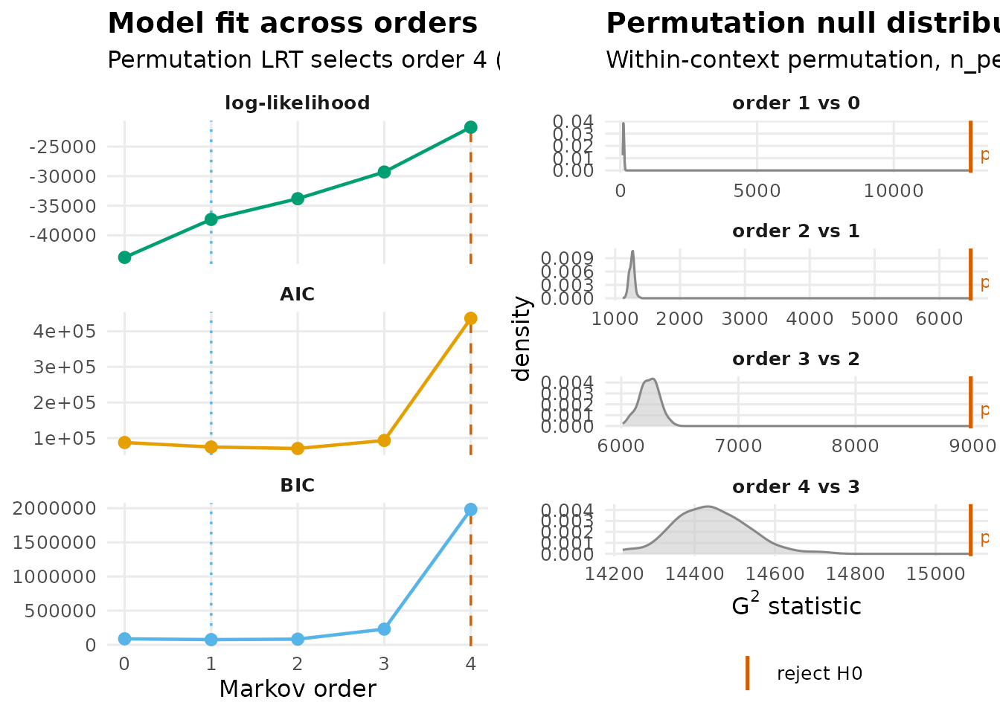

Markov-order adequacy
Written by Mohammed Saqr and Sonsoles López-Pernas
Source:vignettes/articles/markov-order.Rmd
markov-order.RmdA transition network is a first-order Markov model: the probability of the next code is assumed to depend only on the current code, not on the codes before it. The assumption reduces a session to a square matrix of transition probabilities and makes the whole network analysis possible (Saqr et al., 2025), but it is an empirical claim about the data. When the next move of a programmer depends on the last two exchanges with the assistant rather than on the last one, a first-order network averages over that memory and represents the process as more random than it is.
The Markov-order test fits Markov models of increasing order to the session sequences and tests whether each step up in order improves the fit more than expected under the lower order. The likelihood-ratio statistic of each step is judged against a permutation null, and the information criteria AIC and BIC are reported for every order. In a heterogeneous network the question has a second dimension. The order of the combined sequence describes the joint human-AI process, while the order of each actor’s own events describes that actor’s process. When the combined process needs a higher order than either actor alone, the memory lies in the coupling between the actors, in how a reply depends on the exchange that led to it.
Data
The test is applied to three sets of sequences from the 429 vibe-coding sessions.
-
Human events:
human_simplified, the human codes of each session in their order (six codes). -
AI events:
ai_simplified, the AI codes of each session in their order (six codes). -
Combined:
human_ai, the interleaved human and AI events of each session, as stored on the htna network (twelve codes).
All three tables have the session in session_id, the
code in code and the order in
order_in_session. The per-actor sequences are single-actor
networks, built with Nestimate::build_network(); the
combined sequence is the htna network.
data(human_ai, human_simplified, ai_simplified)
human_net <- Nestimate::build_network(human_simplified, method = "relative",
action = "code", session = "session_id",
order = "order_in_session")
ai_net <- Nestimate::build_network(ai_simplified, method = "relative",
action = "code", session = "session_id",
order = "order_in_session")
net <- build_htna(human_ai, actor_type = "actor_type")Does the human’s next move depend on more than the current one?
markov_order_test_htna() tests orders 1 to
max_order in turn. Order 0 is the model in which codes
occur independently of what came before. With n_perm = 200,
the smallest attainable p-value is 1/201 = 0.00498.
mo_human <- markov_order_test_htna(human_net, max_order = 4L, n_perm = 200L,
seed = 1L)
mo_human
#> Markov Order Test [within-w permutation, n_perm = 200, alpha = 0.050]
#> 425 sequences / 10792 observations / 6 states
#>
#> Selected order BIC: 1 AIC: 2 permutation-LRT: 4
#>
#> order loglik AIC BIC df g2 p_permutation p_asymptotic significant
#> 0 -17913 35836 35873 NA NA NA NA NA
#> 1 -17269 34607 34862 25 1261 0.00498 2.21e-250 TRUE
#> 2 -16898 34226 35793 150 638 0.00498 1.78e-61 TRUE
#> 3 -16143 34875 44312 900 1461 0.00498 2.01e-29 TRUE
#> 4 -13757 43065 99718 4111 4630 0.00995 1.88e-08 TRUEThe test uses 425 of the human sequences (and, below, 425 AI and 428 combined sequences), with 10,792 human events. For the human events every step up to order 4 is significant under the permutation test, so the selected order saturates at the largest order tested. The information criteria disagree with the test: AIC prefers order 2 and BIC order 1. The reason is in the degrees of freedom: the step from order 3 to order 4 adds 4,111 parameters for 10,792 observations, so the higher-order tables are sparse and the gain in likelihood is bought with a large number of rarely observed contexts.
Does the AI’s next move depend on more than the current one?
The same test on the AI events is directly comparable, since it uses the same orders, permutations and seed.
mo_ai <- markov_order_test_htna(ai_net, max_order = 4L, n_perm = 200L,
seed = 1L)
mo_ai
#> Markov Order Test [within-w permutation, n_perm = 200, alpha = 0.050]
#> 425 sequences / 8548 observations / 6 states
#>
#> Selected order BIC: 1 AIC: 1 permutation-LRT: 3
#>
#> order loglik AIC BIC df g2 p_permutation p_asymptotic significant
#> 0 -12541 25092 25128 NA NA NA NA NA
#> 1 -11594 23258 23504 25 1852 0.00498 0.00e+00 TRUE
#> 2 -11421 23273 24789 150 317 0.00498 5.09e-14 TRUE
#> 3 -10996 24582 33716 675 837 0.00498 1.98e-05 TRUE
#> 4 -10036 35621 90462 1761 1886 0.19403 1.95e-02 FALSEFor the AI events the steps up to order 3 are significant and the step to order 4 is not (p = 0.194), so the permutation test selects order 3. Both AIC and BIC prefer order 1. The AI’s sequence of its own moves therefore carries less memory than the human’s.
Does the joint process depend on more than the current move?
The combined test treats the interleaved sequence as one process over the twelve codes. Dependence in this view can come from within-actor memory or from the coupling between actors that the per-actor tests cannot see.
mo_combined <- markov_order_test_htna(net, max_order = 4L, n_perm = 200L,
seed = 1L)
mo_combined
#> Markov Order Test [within-w permutation, n_perm = 200, alpha = 0.050]
#> 428 sequences / 19346 observations / 12 states
#>
#> Selected order BIC: 1 AIC: 2 permutation-LRT: 4
#>
#> order loglik AIC BIC df g2 p_permutation p_asymptotic significant
#> 0 -43742 87506 87592 NA NA NA NA NA
#> 1 -37316 74900 75955 121 12816 0.00498 0.00e+00 TRUE
#> 2 -33813 70683 82717 1272 6482 0.00498 0.00e+00 TRUE
#> 3 -29298 93262 229677 7242 8983 0.00498 1.53e-41 TRUE
#> 4 -21731 436236 1981849 16296 15087 0.00498 1.00e+00 TRUEEvery step is significant under the permutation test (order 4 selected), AIC prefers order 2 and BIC order 1. At order 4 the model has 16,296 degrees of freedom for 19,346 observations; the asymptotic p-value of that step is 1.00 while the permutation p-value is 0.00498, which shows how far the chi-square approximation fails on such sparse tables and why the permutation test is used.
plot(mo_combined)
The plot shows the log-likelihood and the information criteria of each order beside the permutation null distributions of the test statistics. In the table, the log-likelihood keeps rising with the order, while BIC is lowest at order 1 (75,955) and AIC at order 2 (70,683).
What do the three tests say together?
| Sequences | Permutation | AIC | BIC |
|---|---|---|---|
| Human events | 4 (largest tested) | 2 | 1 |
| AI events | 3 | 1 | 1 |
| Combined | 4 (largest tested) | 2 | 1 |
None of the three sets is first-order under the permutation test, and the human events and the combined process show memory beyond the largest order tested. The penalized criteria favor a first- or second-order model in every case, because the higher-order contexts are too many to be estimated from about 430 sequences. The first-order heterogeneous network is therefore a simplification of these data: it describes the aggregate transitions between codes and actors faithfully, but it does not represent how a move depends on the exchange before it. Claims about turn-taking that span several moves, such as a human request, an AI plan and the following AI execution, are better examined with the patterns of the Sequences and patterns guide than with single edges.
When the selected order equals max_order, the test has
not found the order of the process, only a lower bound for it;
max_order can be raised at the cost of still sparser
tables. The number of parameters at order k grows roughly as
the number of codes to the power k + 1.
What if the first-order assumption is rejected?
The first-order network remains a valid description of transition frequencies; what changes is the claim it can support. Three alternatives address different reasons for the rejection.
| Reason for the rejection | Model |
|---|---|
| The next code depends on several preceding codes | Higher-order networks: Nestimate::build_hon(),
Nestimate::build_honem(),
Nestimate::build_hypa(),
Nestimate::build_mogen()
|
| The sessions mix several first-order processes, which together look higher-order | A mixture of Markov chains, Nestimate::cluster_mmm();
see Clustering inputs
|
| Influence fades over several steps rather than ending after one | build_htna(..., method = "attention") |
The actor partition is not carried by higher-order networks, whose nodes are contexts of several codes rather than single codes; a mixture of Markov chains keeps the partition and returns one heterogeneous network per cluster.
References
Saqr, M., López-Pernas, S., Törmänen, T., Kaliisa, R., Misiejuk, K., & Tikka, S. (2025). Transition network analysis: A novel framework for modeling, visualizing, and identifying the temporal patterns of learners and learning processes. Proceedings of the 15th International Learning Analytics and Knowledge Conference, 351-361. https://doi.org/10.1145/3706468.3706513